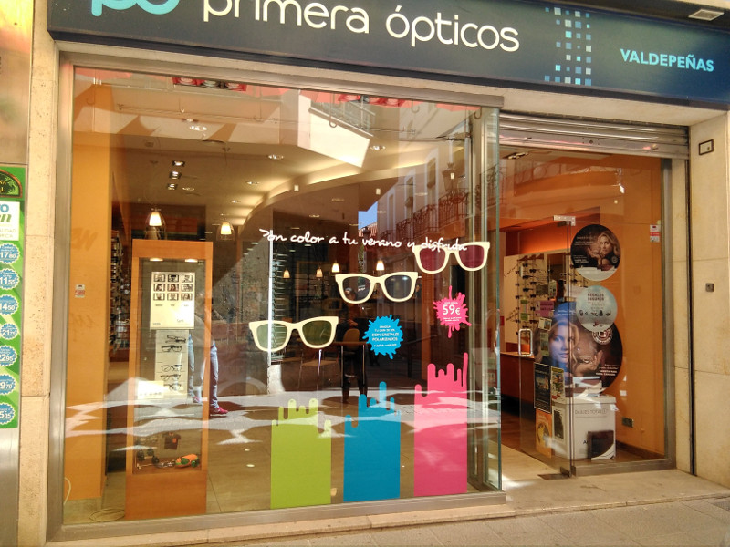
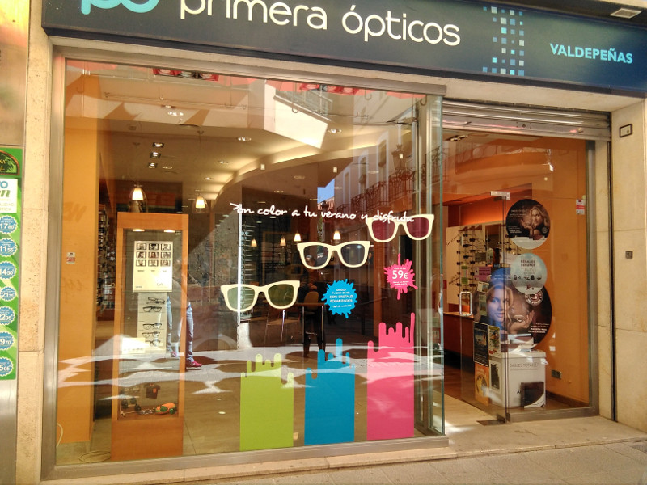
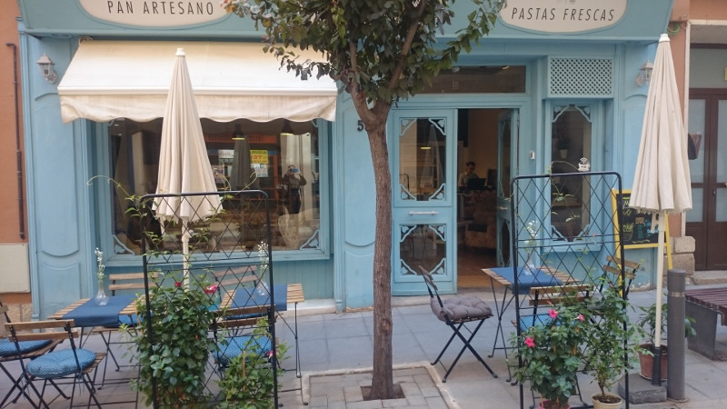
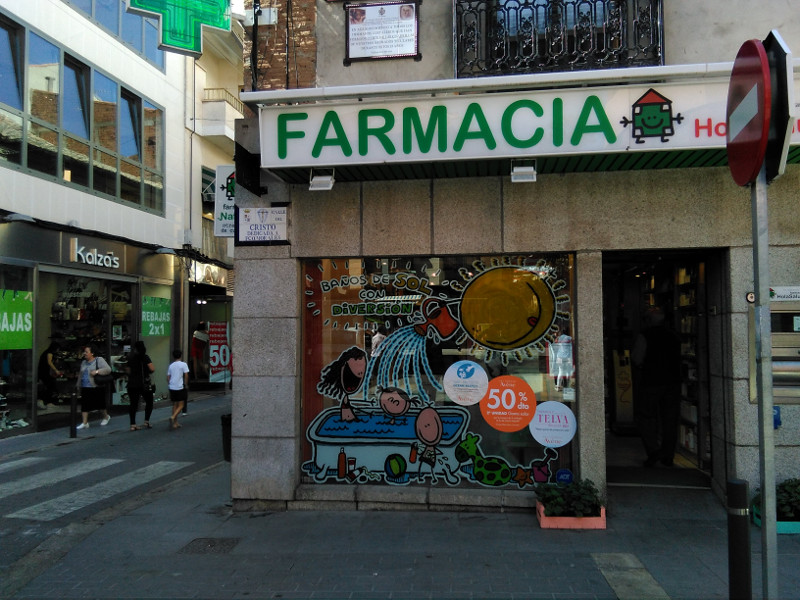
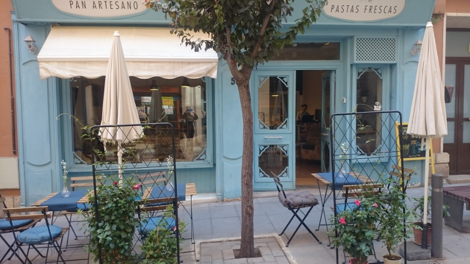
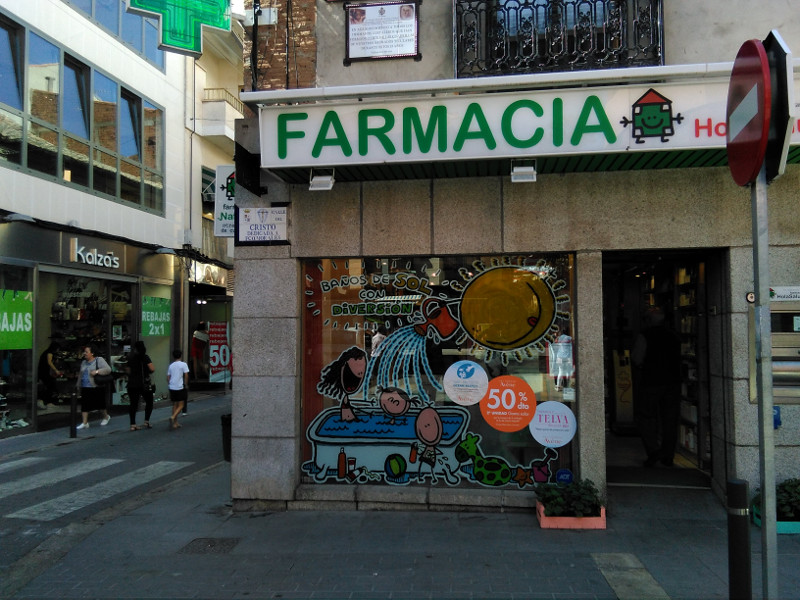
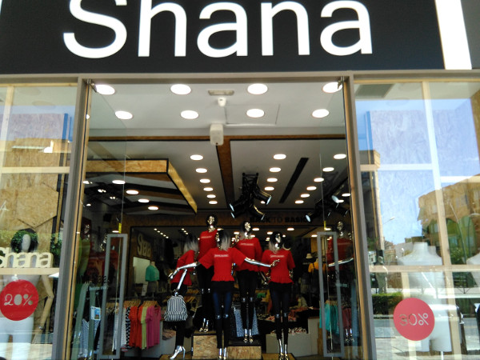
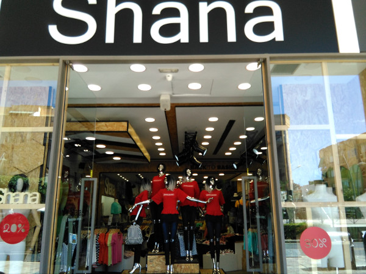

Zonas comerciales de Valdepeñas
En la calle escuelas podemos encontrar multitud de tiendas, moda, viajes, etc.
 

 
En la calle Virgen encontramos el mercado municipal y algunos comercios como perfumerias, farmacias, etc.


En la calle Virgen encontramos el mercado municipal y algunos comercios como perfumerias, farmacias, etc.


 En el canal existen multitud de tiendas de ropa asi como un gran abanico de bares y restaurantes donde descansar tras un ajetreado dia de compras con un buen vino de Valdepeñas.

En el canal existen multitud de tiendas de ropa asi como un gran abanico de bares y restaurantes donde descansar tras un ajetreado dia de compras con un buen vino de Valdepeñas.



Volver a la página de inicio.